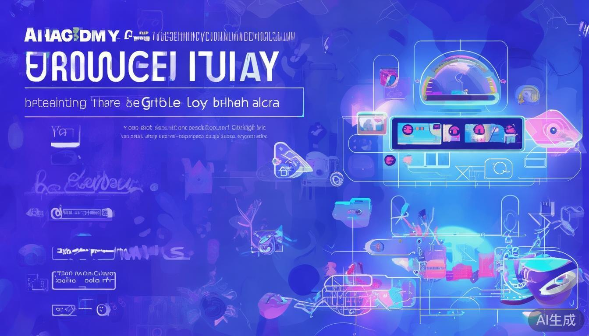

ImageCaptioner 看图说话
白驹 ccowork · AI 学院 毕业设计 20 号
20 号毕业设计：ImageCaptioner 看图说话
本项目解决传统图像识别仅能输出分类标签、无法生成自然语言场景描述的痛点，覆盖多模态模型调用、提示工程、前后端联调全流程，完成后可掌握多模态Agent开发、图像语义理解落地能力，可独立搭建商用级看图说话工具。
项目简介
ImageCaptioner 看图说话是面向内容创作、无障碍辅助、图像检索场景的轻量多模态Agent，基于开源/商用多模态大模型实现图像到自然语言的精准转换，支持中文场景优化、自定义描述风格、关键词自动标注，无需复杂本地训练即可快速部署，适合作为多模态方向入门毕业设计项目，代码量控制在800行以内，可在普通消费级显卡/CPU环境运行。
功能特性

- 多源图像输入：支持本地上传JPG/PNG/WebP格式图像、URL图像拉取两种输入方式，单图最大支持10MB，自动完成格式校验与尺寸压缩
- 多风格描述生成：内置「简洁标签版」「生动故事版」「无障碍读屏版」「商品文案版」4种预设Prompt模板，支持用户自定义描述长度与风格
- 智能关键词标注：自动提取图像中实体、场景、动作、情绪四类标签，输出结构化JSON结果，支持导出为CSV标签文件
- 结果交互优化：支持生成结果一键复制、历史记录本地缓存、描述结果二次润色，可手动修正标签后重新生成对应描述
- 多模型适配：默认接入 GPT-6 Luna 降低调用成本，支持切换Qwen-VL-Chat本地开源模型、文心一言多模态版，无需修改核心业务逻辑
- 轻量Web界面：基于Gradio搭建可视化交互页，支持批量上传最多10张图像批量生成描述，适配移动端访问
技术架构
| 组件 | 技术选型 | 作用 |
|---|---|---|
| 交互层 | Gradio 4.44.0 | 快速搭建Web可视化界面，处理文件上传、参数配置、结果展示逻辑 |
| 业务逻辑层 | Python 3.10 + Pydantic 2.8.2 | 实现参数校验、Prompt组装、结果解析、历史记录管理核心逻辑 |
| 模型适配层 | LiteLLM 1.44.0 + Transformers 4.44.0 | 统一封装多模态大模型调用接口，兼容云端API与本地开源模型 |
| 图像处理层 | Pillow 10.4.0 | 完成图像格式转换、尺寸压缩、EXIF信息校正、URL图像拉取 |
| 存储层 | SQLite + LocalStorage | 本地存储生成历史记录、用户自定义Prompt模板，无需额外部署数据库 |
架构说明：项目采用分层解耦设计，交互层仅负责用户输入输出，不掺杂业务逻辑；模型适配层通过LiteLLM统一接口屏蔽不同多模态模型的调用差异，新增模型仅需添加对应配置即可接入；图像处理层前置完成所有图像预处理操作，避免无效请求发送至模型端，降低调用成本与报错概率；所有配置项通过.env文件管理，无需硬编码密钥与模型参数。
核心代码骨架
# 核心模块：多模态描述生成服务（caption_service.py）
import os
from litellm import completion
from PIL import Image
import base64
from io import BytesIO
from pydantic import BaseModel
from typing import List, Literal
# 定义返回结果结构
class CaptionResult(BaseModel):
description: str
tags: List[str]
style: Literal["simple", "story", "accessibility", "product"]
class ImageCaptioner:
def __init__(self, model_name: str = "gpt-4o-mini"):
self.model_name = model_name
# 加载不同风格的Prompt模板
self.prompt_templates = {
"simple": "请为这张图生成100字以内的简洁描述，同时提取5个以内核心关键词，按JSON格式返回，字段为description、tags",
"story": "请以讲故事的口吻为这张图生成200字左右的生动场景描述，提取6个关键词，按JSON格式返回，字段为description、tags",
"accessibility": "请为视障用户生成精准的读屏描述，详细说明图中元素位置、动作、文字内容，提取8个关键词，按JSON格式返回",
"product": "请为电商平台生成商品卖点描述，突出材质、功能、使用场景，提取5个商品标签，按JSON格式返回"
}
def _image_to_base64(self, img: Image.Image) -> str:
"""预处理图像：压缩后转base64，避免请求过大"""
buffer = BytesIO()
img.thumbnail((1024, 1024)) # 统一压缩至最长边1024px
img.save(buffer, format="JPEG", quality=85)
return base64.b64encode(buffer.getvalue()).decode()
def generate(self, img: Image.Image, style: str = "simple") -> CaptionResult:
"""核心生成逻辑：组装Prompt调用多模态模型，解析返回结果"""
img_b64 = self._image_to_base64(img)
prompt = self.prompt_templates[style]
# 调用多模态模型，统一用LiteLLM格式
response = completion(
model=self.model_name,
messages=[{
"role": "user",
"content": [
{"type": "text", "text": prompt},
{"type": "image_url", "image_url": {"url": f"data:image/jpeg;base64,{img_b64}"}}
]
}],
response_format={"type": "json_object"},
temperature=0.3
)
# 解析JSON结果转为结构化对象
import json
res_data = json.loads(response.choices[0].message.content)
return CaptionResult(**res_data, style=style)运行步骤
- 环境准备：安装Python 3.10~3.12版本，创建虚拟环境并激活：
python -m venv venv && source venv/bin/activate（Windows系统执行venv\Scripts\activate） - 安装依赖：执行命令安装核心库：
pip install gradio==4.44.0 litellm==1.44.0 pillow==10.4.0 pydantic==2.8.2 python-dotenv==1.0.1 - 配置密钥：在项目根目录创建.env文件，写入对应模型密钥，若使用OpenAI模型则添加
OPENAI_API_KEY=你的密钥，若使用本地Qwen-VL模型则无需配置密钥 - 启动服务：在项目根目录创建app.py文件，引入上述ImageCaptioner类，编写Gradio界面逻辑后执行启动命令：
python app.py，首次启动若使用本地模型会自动下载约7B参数的权重文件 - 访问使用：启动成功后打开浏览器访问
http://localhost:7860，上传图像后选择描述风格，点击「生成描述」按钮即可获取结果，支持批量上传多张图像 - 可选切换本地模型：修改初始化参数为
ImageCaptioner(model_name="qwen/Qwen-VL-Chat")，即可自动调用本地开源模型，无需联网即可运行 - 部署公网：启动时添加参数
share=True，即可获取Gradio生成的临时公网链接，支持分享给外部用户访问
扩展思路
- 垂直场景优化：针对电商商品图、医学影像、少儿绘本等特定场景微调小参数多模态模型（如Qwen-VL-2B），提升领域内描述准确率，降低通用模型的幻觉问题
- 多语言支持：新增语言切换模块，支持生成英文、日文等多语言描述，接入翻译API实现描述结果实时互译，适配跨境内容创作场景
- 长图/视频帧扩展：新增长图切片识别、短视频抽帧逻辑，支持对长图分区域描述、短视频生成连贯旁白，拓展到视频字幕自动生成场景
- 内容合规校验：接入内容安全API，对输入图像、生成描述做违规内容检测，避免生成敏感内容，满足商用部署的合规要求
小结与练习
核心收获
- 掌握多模态大模型的统一调用方式，理解云端API与本地开源模型的适配逻辑，学会用分层架构解耦业务与模型依赖
- 掌握多模态场景下的Prompt工程方法，理解不同风格描述的模板设计逻辑，学会通过结构化输出约束降低模型幻觉
- 掌握轻量AI应用的快速搭建流程，学会用Gradio快速实现可视化交互，无需前端开发经验即可交付可演示的AI产品
动手练习
- 基础练习：在现有代码基础上新增「小红书文案版」描述风格，设计对应Prompt模板，要求输出带emoji、带话题标签的种草文案，测试3张不同类型商品图的生成效果
- 进阶练习：接入SQLite存储模块，实现历史记录的持久化存储，在界面中添加历史记录查询面板，支持按标签搜索过往生成的图像与描述结果。
项目出处与许可
本项目为本站 AI 学院「毕业设计」板块原创教学项目，由 AI 生成原型并整理，以官方文档与真实开源生态为准。 技术栈均基于公开、主流的开源库（如 Transformers / LangChain / FastAPI / SQLite 等），可对照各库官方仓库核验。 如引用第三方开源项目，请遵循其原始许可证（MIT / Apache-2.0 / BSD 等）；本项目内容可按 MIT 协议自由使用，标注出处即可。